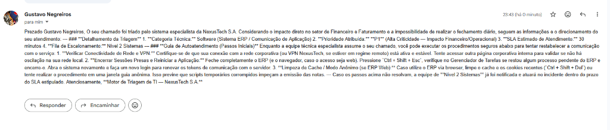

Triagem cognitiva de chamados de TI e autoatendimento em tempo real ponderados por criticidade de setor corporativo — construídos com No Code, Low Code e Vibecode.
No suporte tradicional, chamados caem em uma fila linear sem distinção de departamento. Uma falha no setor de Operações (NOC) ou Financeiro aguarda atrás de dúvidas triviais do setor Administrativo.
Quando o próprio usuário escolhe a urgência no formulário, quase todos os chamados são marcados como "Urgente", distorcendo os Acordos de Nível de Serviço (SLAs) da equipe de TI.
Desenvolver um sistema ITSM tradicional com backend dedicado (Node.js/Python, banco SQL, servidores e regras de negócio complexas) consome semanas de trabalho e alto orçamento.
O HelpDesk AI cruza automaticamente o Setor Corporativo com o Relato Técnico para entregar quatro resultados instantâneos:
Identifica automaticamente se o incidente pertence a Hardware, Software, Rede/Infra ou Acesso/Segurança.
Atribui racionalmente a prioridade (P1 a P4) e estipula o prazo máximo de atendimento (de 15 min a 24h).
Direciona o chamado na planilha de governança para Nível 1, Nível 2 Infraestrutura ou Nível 2 Sistemas.
Envia um e-mail imediato ao colaborador com 3 passos técnicos seguros para resolução autônoma.
| Setor Corporativo | Impacto de Negócio | Prioridade Base | SLA Alvo |
|---|---|---|---|
| 1. Operações e NOC | Disponibilidade ao cliente final | P1 / P2 | 15 min — 1h |
| 2. Financeiro e Faturamento | Fluxo de caixa e notas fiscais | P1 / P2 | 30 min — 2h |
| 3. Engenharia e Dev | Esteiras CI/CD e repositórios | P2 / P3 | 1h — 4h |
| 4. Comercial e CX | Vendas e atendimento externo | P2 / P3 | 2h — 6h |
| 5. RH e Administrativo | Rotinas internas departamentais | P3 / P4 | 4h — 24h |
Caso A (RH): "Lentidão ao abrir planilha compartilhada" → Classificado como P4 (SLA 24h).
Caso B (Financeiro): "Erro ao emitir notas fiscais no ERP no fechamento" → Classificado como P1 (SLA 30 min) e escalado direto para Nível 2 Sistemas.
Interface e Persistência: Coleta estruturada com validação de e-mail e lista suspensa fechada para os 5 setores da NexusTech S.A. Os registros alimentam em tempo real a planilha central de governança da TI.
Orquestração de Eventos: Escuta ativa de novas linhas inseridas na planilha, estruturação do payload com variáveis dinâmicas, chamada à API de IA, atualização da planilha e disparo de e-mail via Gmail.
Motor Cognitivo: Substitui centenas de condicionais rígidas (if/else) por engenharia de prompt instrucional que interpreta a semântica do problema cruzada com o setor corporativo.

Entrada: Falha de comunicação no ERP durante emissão de notas fiscais pelo setor Financeiro e Faturamento.
Elimina o viés subjetivo do usuário. O motor cognitivo pondera automaticamente o impacto estratégico do departamento afetado na NexusTech S.A. antes de definir a fila e o SLA.
O colaborador recebe instruções técnicas estruturadas em menos de 30 segundos após enviar o formulário, resolvendo incidentes recorrentes de Nível 1 sem intervenção humana.
Um fluxo completo que exigiria semanas de desenvolvimento backend e provisionamento de servidores em nuvem foi prototipado, testado e validado em horas utilizando camadas gratuitas.
Descrições excessivamente curtas podem levar a IA a sugerir passos genéricos. Mitigação: Guardrails no prompt restringindo a saída a 3 procedimentos seguros e mantendo supervisão humana na planilha.
Durante a bateria de testes, registrou-se erro HTTP 503 High Demand na camada gratuita da API e limite de 1.000 operações/mês no Make. Mitigação: Comutação de modelo para estabilidade do fluxo.
Os relatos de incidentes corporativos transitam por provedores externos de nuvem (Google e Make). Em produção crítica, exige-se anonimização de dados sensíveis e instâncias empresariais privadas.
Adicionar um Router condicional no Make para disparar notificações imediatas no Slack ou Microsoft Teams da equipe de plantão sempre que um chamado for classificado como P1.
Conectar o modelo Gemini aos manuais técnicos internos da NexusTech S.A. via Retrieval-Augmented Generation para respostas específicas dos softwares internos da empresa.
Substituir gradualmente a planilha por integração via webhook com Jira Service Management ou GLPI conforme a operação escalar.
Protótipo, código-fonte e documentação disponíveis no repositório oficial do projeto.